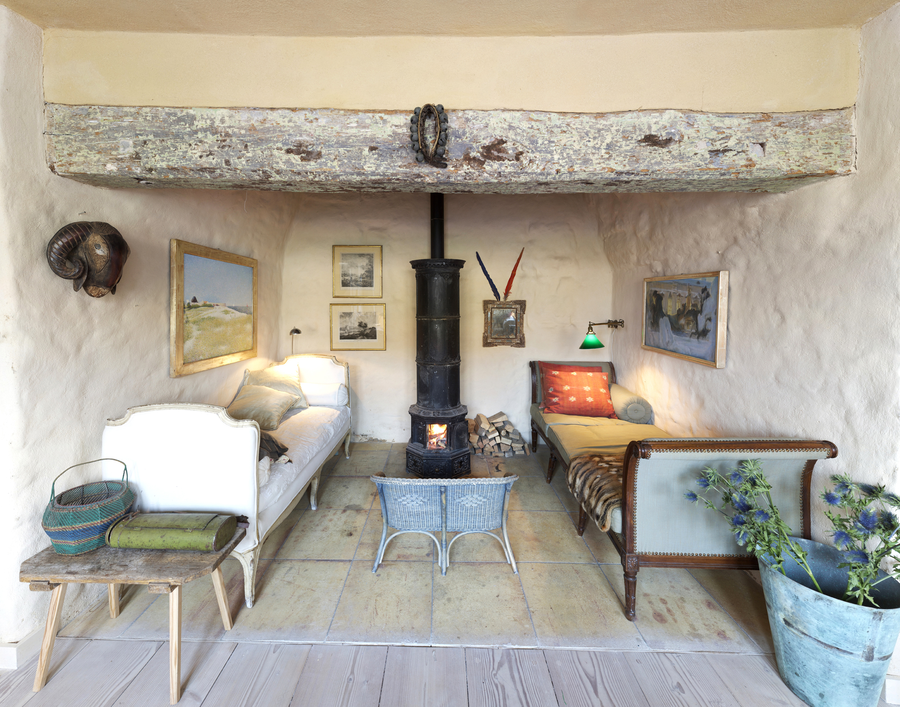

We create eclectic and georgous Interiors
Ochre Design was founded by Olga de Hauke in 2010. She is cretaing imaginative interior designs for clients all over Europe from her studio at Bury Hill Fram in England in the beautiful Wiltshire Cotswolds. Olga's personal style is driven by her accute sense of colur and love of mixing textures. She often works with classic interior concepts that she filters through her eclectic and modern apraoch into something very indiviual and unique.At the centre of her Design process stands her relationship with herclient and their individual wishes.